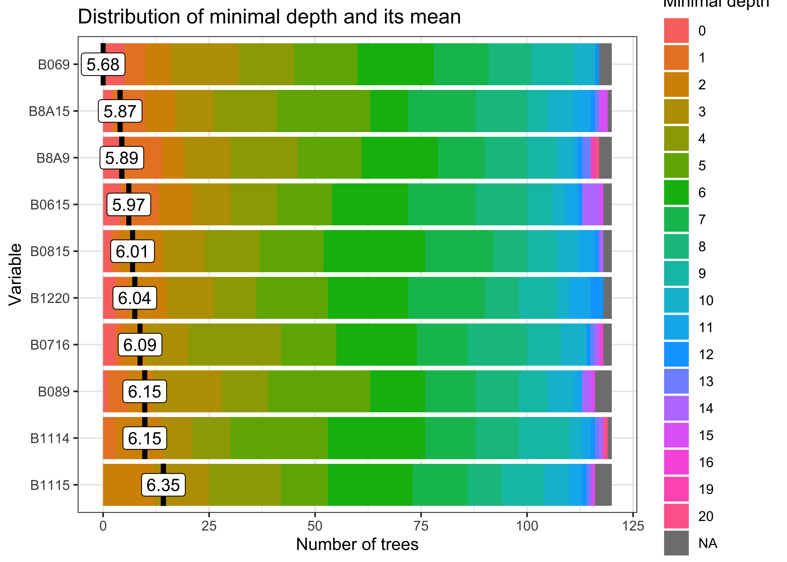
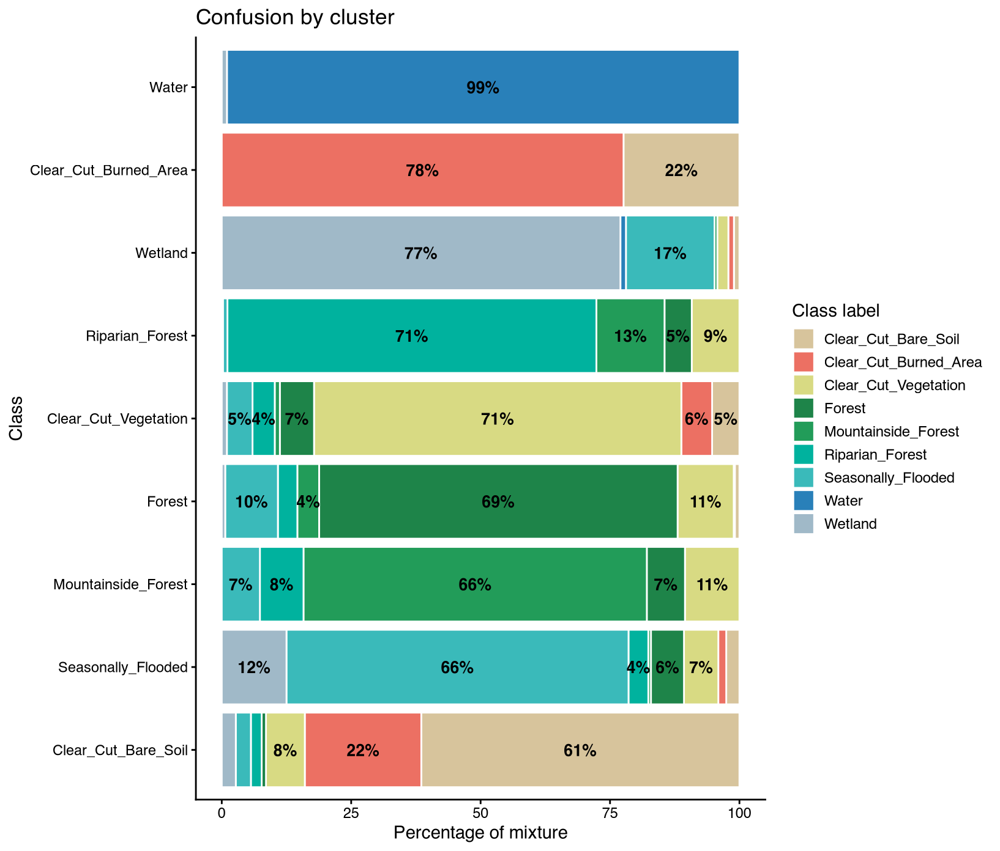
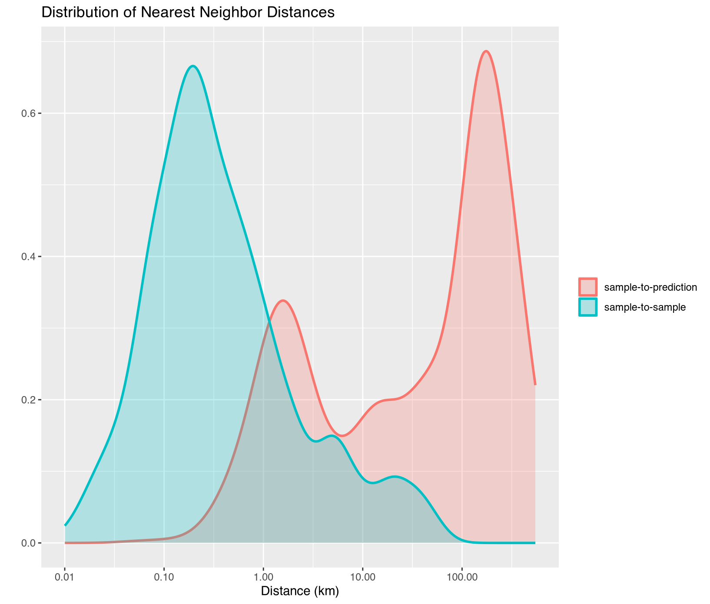
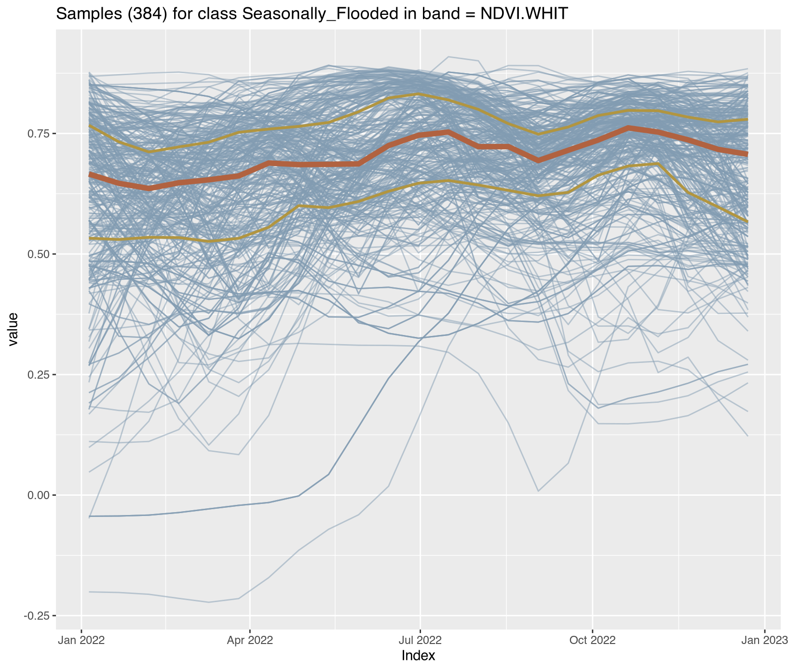
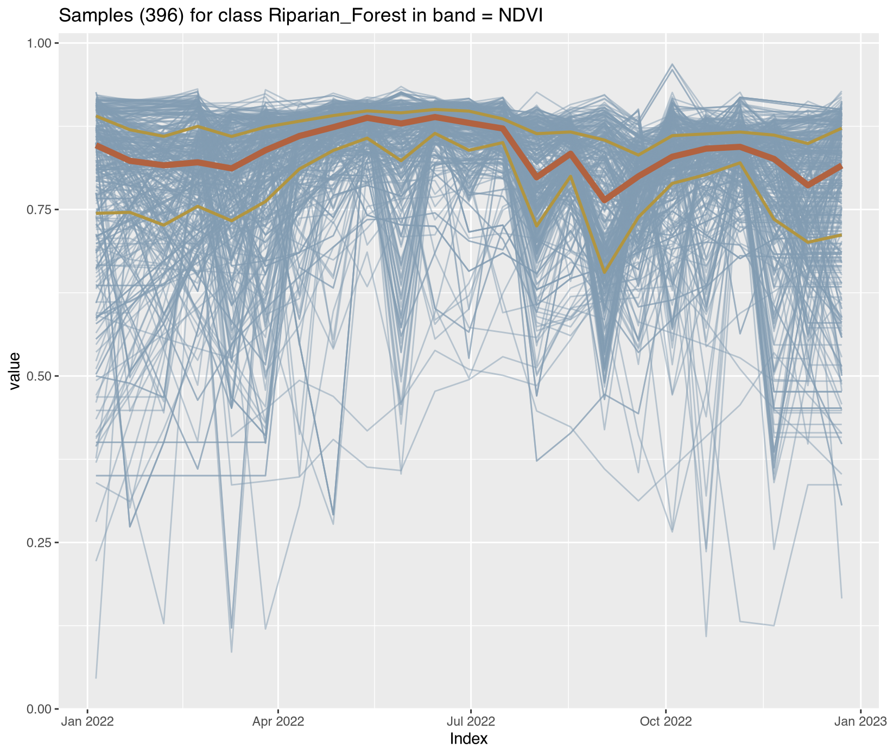
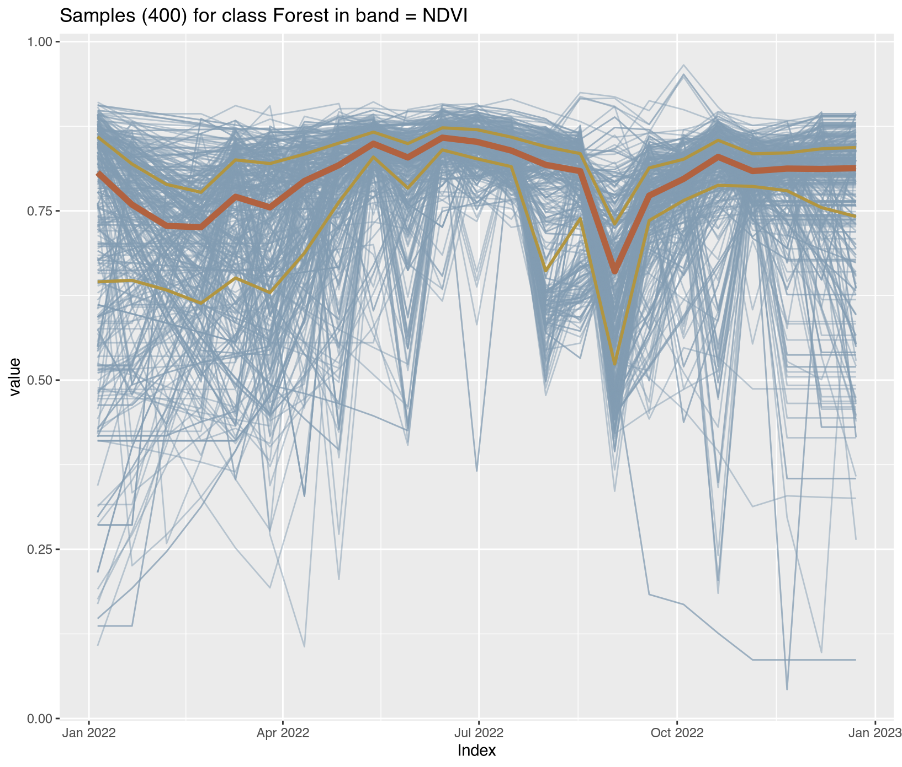
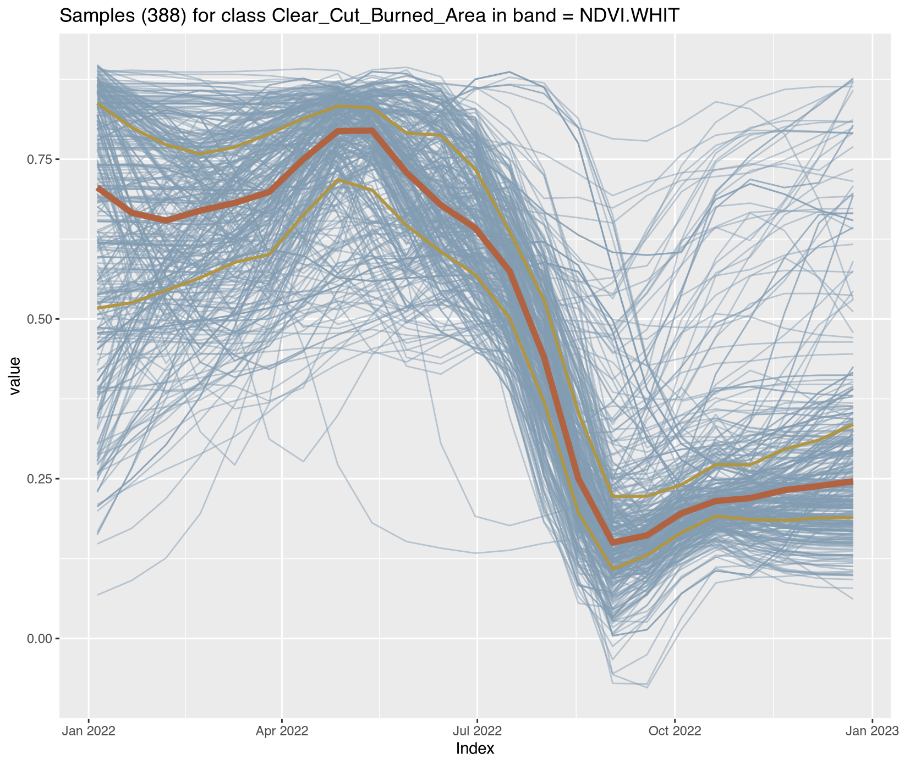
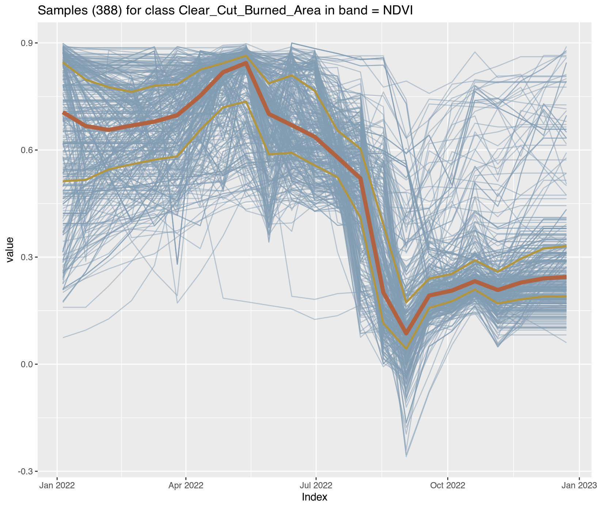

easypackages::packages(
"bslib", "caret", "cols4all", "covr", "cowplot", "dendextend", "digest","DiagrammeR",
"dtwclust", "downlit", "devtools", "e1071", "exactextractr","elevatr", "FNN",
"future", "forestdata","gdalcubes", "gdalUtilities", "geojsonsf", "geos",
"ggplot2", "ggstats", "ggspatial", "ggmap", "ggplotify", "ggpubr", "ggrepel",
"giscoR", "hdf5r", "httr", "httr2", "htmltools", "jsonlite", "kohonen", "leafem",
"leaflet.providers", "libgeos","luz","lwgeom", "leaflet", "leafgl", "MLmetrics",
"mapedit", "mapview", "maptiles", "methods", "mgcv", "ncdf4", "nnet", "openxlsx",
"parallel", "plotly", "randomForestExplainer","randomForest", "rasterVis", "raster",
"Rcpp", "RcppArmadillo", "RcppCensSpatial", "rayshader", "RcppEigen", "RcppParallel",
"RColorBrewer", "reactable", "rgl", "rsconnect","RStoolbox", "rts", "s2", "sf",
"scales", "sits", "sitsdata", "spdep", "stars", "stringr","supercells", "smotefamily",
"terra", "testthat", "tidyverse", "tidyterra", "tools", "torch", "tmap", "tmaptools",
"terrainr", "xgboost", "webshot", "webshot2",
prompt = F)
sf::sf_use_s2(use_s2 = FALSE)3. Activity Data
Overview
Activity data (AD) represents the spatial extent and temporal dynamics of land-use change in REDD+ accounting. This chapter addresses uncertainty quantification in land cover classification, change detection, and spatial aggregation. These components typically constitute the greatest contribution to total REDD+ uncertainty (Ballantyne et al., 2015).
IPCC Approaches
The IPCC defines three hierarchical approaches for activity data collection that differ in spatial explicitness and uncertainty characteristics (IPCC, 2019):
| Approach | Data Type | Spatial Resolution | Uncertainty |
|---|---|---|---|
| Approach 1 | Area statistics | Aggregated totals | Highest |
| Approach 2 | Sample-based matrices | Point/grid sampling | Moderate |
| Approach 3 | Wall-to-wall maps | Spatially explicit | Lowest |
This chapter implements Approach 3 methods using satellite time series classification, which ART-TREES programs predominantly adopt due to requirements for spatially explicit monitoring, pixel-level change detection, and integration with emission factor stratification. The data cube framework and machine learning workflows demonstrated in sections 3.2-3.9 operationalize Approach 3 while providing the uncertainty quantification infrastructure required under ART-TREES Section 8. The chapter is structured around a data cube framework for organizing and analyzing spatiotemporal land cover data, followed by uncertainty estimation techniques aligned with IPCC methodologies. We organize the technical content into the following components:
- Data Cube Architecture: Spatiotemporal array structures for satellite time series
- IPCC Monitoring Approaches: Transition matrices and spatial explicitness (Approaches 1-3)
- Pixel-Level Uncertainty Tracking: Model residuals for spatial error mapping
- Random Forest Optimization: Monte Carlo calibration of classification algorithms
- Accuracy Assessment: Confusion matrices and validation metrics
Environment Setup
3.1 Time Series Structure
Data cubes provide a structured framework for organizing and analyzing satellite imagery time series. We define data cubes as multidimensional arrays with dimensions associated with space and time, where land cover observations become “attributes” that have duration along the temporal dimension.
For purpose of REDD+ land monitoring, a data cube structure consists of:
- Spatial dimensions: Longitude (x) and latitude (y)
- Temporal dimension: Observation dates (t)
- Spectral dimension: Sensor bands (λ)
- Attributes: Land cover class, uncertainty metrics, model residuals
In the following sections (3.2-3.7), we demonstrate user-friendly operations from the sits and gdalcubes packages for time series workflows (Appel & Pebesma, 2019a; Simoes et al., 2021b). These tools integrate machine learning classification with data cube management and raster processing. This approach is particularly valuable for REDD+ workflows because it supports uncertainty-based optimization of both data cube architecture and classifier training (Appel & Pebesma, 2019b). Sections 3.8-3.9 then cover advanced procedures from the caret and terra packages, including cross-validation and Monte Carlo training simulations for accuracy assessment and model calibration.
3.2 Assemble Data Cube
The sits package installation comes pre-loaded with an API connections1 to ARD collections (Analysis-Ready-Data) via STAC protocols (SpatioTemporal Asset Catalogs). This built-in component allows programmatic access to cloud-hosted imagery from AWS, Microsoft Planetary Computer, EarthData, Copernicus many other leading warehouses. However, raw ARD collections present several challenges for classification workflows:
- Spatial harmonization: Band-specific resolutions require harmonization to common grid avoiding edge anomalies and gaps
- Temporal harmonization: Revisit cycles vary due to orbital geometry, platform scheduling, and atmospheric conditions
- Cloud removal: Atmospheric interference introduces missing observations that corrupt spectral time series
For REDD+ monitoring, temporal gaps create systematic underestimation of forest loss when clearing events coincide with cloud-covered periods; a known source of activity data bias requiring explicit quantification in uncertainty budgets. The sits_regularize() function provides wrapper to gdalcubes operations that transforms heterogeneous imagery into regular or normalized data cubes through coupled spatial and temporal harmonizations.
- Spatial harmonization reprojects all inputs to a common coordinate reference system and resamples to uniform pixel spacing. For instance, fusing Sentinel-1 SAR with Sentinel-2 optical data requires reprojection to the MGRS grid at consistent resolution (typically 10m), ensuring geometric alignment and eliminating co-registration errors that propagate into classification uncertainty.
- Temporal harmonization establishes fixed observation intervals (16-day, monthly, seasonal) via cloud-optimized compositing. Within each interval, the algorithm ranks available scenes by cloud cover percentage, using the clearest image as reference and filling gaps from progressively cloudier acquisitions. Pixels with persistent cloud contamination are flagged as NA and gap-filled through temporal interpolation during feature extraction.
ARD Tile Grids
Sentinel-2 acquisitions are organized according to the Military Grid Reference System (MGRS), which partitions global coverage into 60 longitudinal zones spanning 8° each. Within zones, 6° latitudinal blocks are further subdivided into 110 km × 110 km tiles with 10 km overlap to ensure seamless mosaicking. This tiling structure is critical for REDD+ monitoring systems that track forest change across administrative boundaries, as tile edges can introduce geometric discontinuities if not properly managed during data cube construction.
Landsat missions (4,5,7,8,9) employ the Worldwide Reference System-2 (WRS-2), which references scenes by path (descending orbital track) and row (latitudinal frame center). The WRS-2 grid comprises 233 paths globally, each containing 119 rows. All WRS-2 imagery is delivered with geometric correction to UTM projection, facilitating direct integration with ground reference data and cadastral boundaries commonly used in jurisdictional REDD+ accounting. For operational monitoring systems, understanding these tiling schemes is essential for:
- Stratification: Validation samples must account for tile boundaries to avoid spatial clustering
- Co-registration: Cross-sensor fusion (Landsat-Sentinel) requires explicit handling of differing grid systems
- Computation: Processing workflows optimized for native tile extents reduce unnecessary resampling and associated geometric errors
This analysis replicates methods from Simoes et al. (2021a), which assembles a data cube from MPC’s collection of Sentinel-2 ARD-imagery comprising a single tiled area in the state of Rondonia for the full calendar year of 2022.2 Following assmbly, we normalize raw imagery into a bi-monthly regularized cube below.
Caution: This code cell requires longer runtime (~12 mins).
# Create data cube from Microsoft Planetary Computer ARD
cube_s2_raw <- sits::sits_cube(
source = "MPC",
collection = "SENTINEL-2-L2A",
tiles = "20LMR",
bands = c("B02", "B03", "B04", "B05", "B06", "B07", "B08", "B8A", "B11", "B12", "CLOUD"),
start_date = "2022-01-01",
end_date = "2022-12-31"
)
# Check timelines of assembled tiles
sits::sits_timeline(cube_s2_raw)3.3 Normalize Data Cube
Although default sits operations assemble cubes in the cloud, increased temporal and spatial extents and finer resolutions often require signficant processing times. Especially with larger data cube operations, we recommend assembling data cubes in the cloud and downloading copies of the cube imagery to your drive before normalizing imagery into a regular cube from the local directory of downloads. This speeds up operations and avoids network interruptions or queue lags.
# Copy cube to local files
cube_s2_local <- sits::sits_cube_copy(
cube = cube_s2_raw,
output_dir = "./assets/images/raw/")
# Normalize cube from local files
cube_s2_reg <- sits::sits_regularize(
cube = cube_s2_local,
output_dir = "./assets/images/reg/",
res = 40,
period = "P16D",
multicores = 6
)
# Compute spectral index bands for cube
cube_s2_reg <- sits::sits_apply(
data = cube_s2_reg,
NDVI = (B08 - B04)/(B08 + B04),
output_dir = "./assets/images/reg/")
cube_s2_reg <- sits::sits_apply(
data = cube_s2_reg,
NBR = (B08 - B12) / (B08 + B12),
output_dir = "./assets/images/reg/")
cube_s2_reg <- sits::sits_apply(
data = cube_s2_reg,
EVI = 2.5 * (B08 - B04) / ((B08 + 6.0 * B04 - 7.5 * B02) + 1.0),
output_dir = "./assets/images/reg/")
# Check cube structure
dplyr::glimpse(cube_s2_reg)
# Plot single-date RGB image
plot(cube_s2_reg,
red = "B11",
green = "B8A",
blue = "B02",
date = "2022-07-16"
)NA
|
| | 0%
|
|=== | 4%
|
|====== | 9%
|
|========= | 13%
|
|============ | 17%
|
|=============== | 22%
|
|================== | 26%
|
|===================== | 30%
|
|======================== | 35%
|
|=========================== | 39%
|
|============================== | 43%
|
|================================= | 48%
|
|===================================== | 52%
|
|======================================== | 57%
|
|=========================================== | 61%
|
|============================================== | 65%
|
|================================================= | 70%
|
|==================================================== | 74%
|
|======================================================= | 78%
|
|========================================================== | 83%
|
|============================================================= | 87%
|
|================================================================ | 91%
|
|=================================================================== | 96%
|
|======================================================================| 100%
NA Rows: 1
NA Columns: 11
NA $ source <chr> "MPC"
NA $ collection <chr> "SENTINEL-2-L2A"
NA $ satellite <chr> "SENTINEL-2"
NA $ sensor <chr> "MSI"
NA $ tile <chr> "20LMR"
NA $ xmin <dbl> 399960
NA $ xmax <dbl> 509760
NA $ ymin <dbl> 8990200
NA $ ymax <dbl> 9100000
NA $ crs <chr> "PROJCRS[\"WGS 84 / UTM zone 20S\",\n BASEGEOGCRS[\"WGS …
NA $ file_info <list> [<tbl_df[299 x 13]>]
3.4 Training Data Samples
Training data quality directly determines classification accuracy and, consequently, activity data uncertainty. This analysis uses the samples_deforestation_rondonia dataset (n=6,007 signatures) distributed with the sitsdata package, comprising nine forest disturbance classes collected through expert visual interpretation of Sentinel-2 imagery representing deforestation events across Rondônia state in the Brazilian Amazon:
-
Clear_Cut_Bare_Soil: Post-clearing exposed soil -
Clear_Cut_Burned_Area: Burned clearing residues -
Clear_Cut_Vegetation: Regrowth or residual vegetation post-harvest -
Forest: Intact forest includingMountainside_Forest,Riparian_Forest -
Water,Wetland,Seasonally_Flooded: Hydrological features
The time series spans 2022-01-05 to 2022-12-23 at 16-day intervals, containing 10 Sentinel-2 bands (B02, B03, B04, B05, B06, B07, B8A, B08, B11 and B12). Temporal validity aligns with the agricultural calendar to capture seasonal dynamics of land conversion.
# Import Demo Training Samples
data("samples_deforestation_rondonia")
base::summary(samples_deforestation_rondonia)
NA # A tibble: 9 × 3
NA label count prop
NA <chr> <int> <dbl>
NA 1 Clear_Cut_Bare_Soil 944 0.157
NA 2 Clear_Cut_Burned_Area 983 0.164
NA 3 Clear_Cut_Vegetation 603 0.100
NA 4 Forest 964 0.160
NA 5 Mountainside_Forest 211 0.0351
NA 6 Riparian_Forest 1247 0.208
NA 7 Seasonally_Flooded 731 0.122
NA 8 Water 109 0.0181
NA 9 Wetland 215 0.0358
utils::head(samples_deforestation_rondonia)
NA # A tibble: 6 × 7
NA longitude latitude start_date end_date label cube time_series
NA <dbl> <dbl> <date> <date> <chr> <chr> <list>
NA 1 -66.5 -9.63 2022-01-05 2022-12-23 Clear_Cut_Bare_Soil SENT… <tibble>
NA 2 -66.4 -9.70 2022-01-05 2022-12-23 Clear_Cut_Bare_Soil SENT… <tibble>
NA 3 -66.4 -9.81 2022-01-05 2022-12-23 Forest SENT… <tibble>
NA 4 -66.3 -9.64 2022-01-05 2022-12-23 Clear_Cut_Bare_Soil SENT… <tibble>
NA 5 -66.3 -9.73 2022-01-05 2022-12-23 Clear_Cut_Vegetati… SENT… <tibble>
NA 6 -66.3 -9.73 2022-01-05 2022-12-23 Clear_Cut_Burned_A… SENT… <tibble>Visualizing class-specific temporal trajectories aids in assessing spectral separability; a key determinant of classification uncertainty. The sits_patterns() function fits generalized additive models (GAM) to training data, producing smoothed temporal signatures that represent idealized class behavior. We derive vegetation indices (NDVI, EVI, NBR) to enhance interpretability.
# Compute spectral indexes for training samples
training_samples_with_indices <- samples_deforestation_rondonia |>
sits::sits_apply(NDVI = (B08 - B04)/(B08 + B04)) |>
sits::sits_apply(NBR = (B08 - B12) / (B08 + B12)) |>
sits::sits_apply(EVI = 2.5 * (B08 - B04) / ((B08 + 6.0 * B04 - 7.5 * B02) + 1.0))
# Generate and plot patterns
training_samples_indices <- training_samples_with_indices |>
sits::sits_select(bands = c("NDVI", "EVI", "NBR")) |>
sits::sits_patterns() |> plot()
Temporal signatures conform to documented Amazonian deforestation phenology: forest clearing initiates during dry season onset (May-June), followed by burning in late dry season (August-September), evidenced by abrupt SWIR (B11) decline in Clear_Cut_Burned_Area signatures. Regrowth trajectories (Clear_Cut_Vegetation) exhibit NIR (B8A) recovery through the monitoring period. These temporal contrasts provide the spectral-temporal feature space for subsequent classification.
3.5 Classify Data Cube
Random Forest models provide robust baseline classifiers for activity data, balancing computational efficiency with adequate performance for Tier 2-3 REDD+ requirements. The sits_train() function implements parallelized Random Forest training with default hyperparameters optimized for satellite time series.
# Train model using Random Forest algorithm
model_randomForest <- sits::sits_train(
samples = samples_deforestation_rondonia,
ml_method = sits::sits_rfor(
num_trees = 120,
mtry = 10)
)
# plot the model results
plot(model_randomForest)
Variable importance metrics identify which spatiotemporal features contribute most to class discrimination. For REDD+ operations, understanding feature importance supports:
- Uncertainty attribution: High-importance features with measurement error propagate more uncertainty
- Sensor planning: Identifies critical spectral bands for maintaining classification accuracy
- Transfer learning: Guides feature selection when adapting models to new regions
- Validation design: Informs stratification schemes for accuracy assessment
3.6 Probability Data Cube
Classification outputs are generated as probability cubes rather than discrete label maps to preserve model uncertainty information. The sits_classify() function applies trained models to regularized data cubes using fault-tolerant parallel processing, producing per-class probability layers that quantify model confidence at the pixel level.
The sits package implements parallel computing to minimize communication overhead, which enables multi-core systems without configuration.
# Classify data cube
cube_s2_probs <- sits::sits_classify(
data = cube_s2_reg,
ml_model = model_randomForest,
output_dir = "./assets/images/probs/",
version = "rf-1228", # adds suffix to output filename
multicores = 4,
memsize = 16
)
plot(cube_s2_probs,
labels = "Forest",
palette = "YlGn"
)
Each pixel in the probability cube contains n probability values (where n = number of classes), summing to 1.0. Low maximum probability values indicate pixels with high classification uncertainty, typically occurring at class boundaries, in mixed pixels, or where spectral-temporal signatures deviate from training data. These pixel-level uncertainty metrics support subsequent:
- Adaptive stratification: High-uncertainty pixels receive higher validation sampling density
- Uncertainty propagation: Probability distributions feed Monte Carlo emission simulations
- Quality control: Spatial patterns of low confidence identify systematic classification errors
- Temporal tracking: Probability time series detect gradual transitions missed by discrete labeling
Probability cubes thus serve as the foundation for rigorous uncertainty quantification in subsequent workflow stages.
3.7 Training Data Enhancements
Classification accuracy in REDD+ monitoring depends critically on training sample quality. Large, well-labeled datasets improve model performance regardless of algorithm choice, while noisy or mislabeled samples degrade classification accuracy and inflate activity data uncertainty (Frénay & Verleysen, 2013; Maxwell et al., 2018). This section demonstrates processing methods to identify problematic samples, reduce class imbalance, and address geographic variance before re-training models.
Pixel Entropy Sampling
Active learning uses pixel-level classification uncertainty to systematically improve classification accuracy through iterative model refinement (Cao et al., 2012; Crawford et al., 2013). When there is a finite set of alternative classes, the expected value of conflict is given by the Shannon entropy (Shannon, 1948). Entropy may be used to describe the variations in class membership probabilities associated with each pixel. The sits_uncertainty() function quantifies four types of uncertainty metrics:
\[ \text{H} = -\sum_{i=1}^n Pr(i) \times \log(Pr(i)) \]
where \(Pr(i)\) represents the highest membership probability for pixel \(i\) across \(n\) classes. For REDD+ applications, the margin of confidence typically provides the most actionable results, such as for highlighting transition zones where forest degradation or regeneration creates spectral ambiguity between classes.
# Generate uncertainty cube and sample high-uncertainty pixels
cube_s2_uncertainty <- sits::sits_uncertainty(
cube = cube_s2_probs,
type = "margin",
output_dir = "./assets/images/uncertainty/",
multicores = 4,
memsize = 16)
# Visualize high-uncertainty areas
plot(cube_s2_uncertainty, palette = "Oranges")
# Find samples with high uncertainty
new_samples_locations <- sits::sits_uncertainty_sampling(
uncert_cube = cube_s2_uncertainty,
n = 300,
min_uncert = 0.4,
sampling_window = 10)
# Visualize new training points
sits::sits_view(new_samples_locations)
sf::st_write(new_samples_locations,
"./assets/samples/new_samples_location.gpkg")# Extract new spectral signatures
new_samples <- sits::sits_get_data(
cube = cube_s2_reg,
samples = new_samples_locations)
#new_samples$label <- "Wetland"
new_samples_aligned <- sits_select(data = new_samples,
bands = c("B02", "B03", "B04", "B05", "B06",
"B07", "B08", "B11", "B12", "B8A"))
# Merge with original samples
new_samples_merge <- dplyr::bind_rows(
samples_deforestation_rondonia,
new_samples_aligned)
# Train new model & evaluate
model_randomForest_v2 <- sits::sits_train(
samples = new_samples_merge,
ml_method = sits::sits_rfor(num_trees = 120,mtry = 10))
# Classify new cube
# Classify data cube
cube_s2_probs_v2 <- sits::sits_classify(
data = cube_s2_reg,
ml_model = model_randomForest_v2,
output_dir = "./assets/images/probs/",
version = "rf-1228-v2", # adds suffix to output filename
multicores = 4,
memsize = 16
)
# Derive new uncertainty cube and compare
cube_s2_uncertainty_v2 <- sits::sits_uncertainty(
cube_s2_probs_v2,
type = "margin",
output_dir = "./assets/images/uncertainty_v2/",
multicores = 4,
memsize = 16)
# Visualize side-by-side
plot(cube_s2_uncertainty, palette = "Reds")
plot(cube_s2_uncertainty_v2, palette = "Oranges")# Search for convergence (extract filepath first)
get_uncert_values <- function(uncert_cube) {
files <- uncert_cube$file_info[[1]]$path
r <- terra::rast(files)
terra::values(r)
}
# Calculate statistics
uncert_v1_vals <- get_uncert_values(cube_s2_uncertainty)
uncert_v2_vals <- get_uncert_values(cube_s2_uncertainty_v2)
uncertainty_check = data.frame(
iteration = c("v1", "v2"),
mean_uncert = c(
mean(uncert_v1_vals, na.rm = TRUE),
mean(uncert_v2_vals, na.rm = TRUE)
),
sd_uncert = c(
sd(uncert_v1_vals, na.rm = TRUE),
sd(uncert_v2_vals, na.rm = TRUE)
),
pct_high_uncert = c(
sum(uncert_v1_vals > 0.4, na.rm = TRUE) / sum(!is.na(uncert_v1_vals)) * 100,
sum(uncert_v2_vals > 0.4, na.rm = TRUE) / sum(!is.na(uncert_v2_vals)) * 100
)
)
write.csv(uncertainty_check, "./assets/samples/uncertainty_check.csv")...1 |
iteration |
mean_uncert |
sd_uncert |
pct_high_uncert |
|---|---|---|---|---|
1 |
v1 |
4,508.770 |
2,741.364 |
99.66006 |
2 |
v2 |
5,465.921 |
2,729.796 |
99.82174 |
Short class relabelling, the above method showcases an iterative revision workflow typically used to integrate new samples and retrain models until uncertainty stabilizes. For ART-TREES compliance, uncertainty reduction directly decreases activity data deductions and simplifies third-party verification.
Hierarchical Clustering
We implement below two clustering approaches for evaluating training data quality: Agglomerative Hierarchical Clustering (Yao et al., 2016, AHC) for datasets under 10,000 samples, and Self-Organizing Maps (SOM) for larger collections (Gonçalves et al., 2008; Neagoe et al., 2014). AHC has computational complexity of \(\mathcal{O}(n^2)\) requiring substantial memory, while SOM scales linearly, making it preferable for operational REDD+ monitoring systems.
Hierarchical Clustering computes dissimilarity between samples using dynamic time warping (DTW), which reliably measures differences in satellite time series (Maus et al., 2019; Petitjean et al., 2012). The sits_cluster_dendro() function generates dendrograms that reveal sample groupings and potential mislabeling:
# Cluster samples using DTW distance and Ward linkage
clusters <- sits::sits_cluster_dendro(
samples = training_samples_with_indices,
bands = c("NDVI", "EVI"),
dist_method = "dtw_basic",
linkage = "ward.D2")
# Examine cluster composition
sits::sits_cluster_frequency(clusters)
1 2 3 4 5 6 7 Total
Clear_Cut_Bare_Soil 121 9 104 705 5 0 0 944
Clear_Cut_Burned_Area 79 5 23 874 0 0 2 983
Clear_Cut_Vegetation 259 164 43 103 0 0 34 603
Forest 174 732 5 6 0 0 47 964
Mountainside_Forest 12 145 2 0 0 0 52 211
Riparian_Forest 39 327 11 6 0 0 864 1247
Seasonally_Flooded 414 94 160 25 29 0 9 731
Water 0 0 1 2 2 104 0 109
Wetland 56 1 55 19 53 31 0 215
Total 1154 1477 404 1740 89 135 1008 6007The adjusted rand index (ARI) identifies optimal cluster count (Rand, 1971). Clusters with mixed labels indicate either:
- mislabeled samples requiring removal,
- spectral confusion between classes,
- natural variability in land cover signatures. s
The sits_cluster_clean() function removes minority labels within clusters, retaining only dominant classes to reduce training noise.
Self-Organizing Maps provide efficient quality assessment for large datasets through unsupervised learning that projects high-dimensional time series onto 2D grids. The sits_som_map() function identifies outliers and evaluates class separability:
# Remove cluster#5 from the samples
clusters_new <- dplyr::filter(clusters, cluster != 5)
clusters_clean <- sits::sits_cluster_clean(clusters_new)
# Check clusters samples frequency
sits::sits_cluster_frequency(clusters_clean)
# Generate SOM with optimal grid dimensions
som_map <- sits::sits_som_map(
training_samples_with_indices,
grid_xdim = 10,
grid_ydim = 10)
# Clean samples by removing mixed neurons
samples_clean <- sits::sits_som_clean_samples(som_map)
# Visualize sample clustering & class confusions
som_eval <- sits::sits_som_evaluate_cluster(som_map)
plot(som_eval)
plot(som_map) 1 2 3 4 Total
Clear_Cut_Burned_Area 0 5 0 0 5
Forest 0 0 0 6 6
Mountainside_Forest 12 0 2 0 14
Total 12 5 2 6 25

Neurons containing multiple classes reveal spectral overlap requiring investigation. The SOM-based cleaning removes samples from mixed neurons, improving class separability while preserving within-class variability essential for generalization.
Class Imbalances
Imbalanced training sets—where some classes have many more samples than others—bias classifiers toward over-represented classes, inflating omission errors for rare forest types. The sits_reduce_imbalance() function implements under-sampling and over-sampling strategies:
# Balance samples across classes
samples_balanced <- sits::sits_reduce_imbalance(
samples = training_samples_with_indices,
n_samples_over = 200, # Oversample rare classes
n_samples_under = 400, # Undersample common classes
multicores = 4)
# Re-evaluate using SOM clustering
som_map_balanced <- sits::sits_som_map(
data = samples_balanced,
grid_xdim = 10,
grid_ydim = 10,
alpha = 1.0,
distance = "dtw",
rlen = 20)
# Store estimates in tibble
som_eval_balanced <- sits::sits_som_evaluate_cluster(
som_map_balanced)
# Visualize results
plot(som_eval)
plot(som_eval_balanced)
summary(samples_balanced)

# A tibble: 9 × 3
label count prop
<chr> <int> <dbl>
1 Clear_Cut_Bare_Soil 400 0.134
2 Clear_Cut_Burned_Area 388 0.130
3 Clear_Cut_Vegetation 392 0.131
4 Forest 400 0.134
5 Mountainside_Forest 211 0.0707
6 Riparian_Forest 396 0.133
7 Seasonally_Flooded 384 0.129
8 Water 200 0.0670
9 Wetland 215 0.0720Under-sampling randomly removes samples from majority classes to match minority class frequencies, reducing computational load but discarding potentially informative data. Over-sampling uses SMOTE [Synthetic Minority Over-sampling Technique; Siriseriwan (2024); Torgo (2010)] to generate synthetic samples for rare classes, improving classifier sensitivity without losing real observations. For REDD+ applications, maintaining adequate representation of degraded forest classes often requires combined strategies.
Geographic Variance
Training samples must capture spatial variability across jurisdictions. Clustered sampling creates geographic gaps where model predictions have higher uncertainty (Meyer & Pebesma, 2022). The sits_geo_dist() function compares sample-to-sample distances against prediction-location-to-sample distances:
# Derive jurisdiction boundary
bbox_cube <- sits::sits_bbox(cube_s2_reg)
bbox_sf <- sf::st_bbox(
c(xmin = aoi$xmin,
ymin = aoi$ymin,
xmax = aoi$xmax,
ymax = aoi$ymax),
crs = sf::st_crs(aoi$crs))
# Convert to sf
aoi <- sf::st_as_sf(sf::st_as_sfc(bbox_sf))
# Assess geographic coverage
distances <- sits::sits_geo_dist(
training_samples_with_indices, roi = aoi)
plot(distances)
Mismatched distributions indicate insufficient spatial coverage. Areas with few nearby training samples will exhibit higher classification uncertainty, requiring either additional field sampling or explicit uncertainty quantification in those regions during accuracy assessment.
Noise Filtering
Atmospheric contamination and sensor artifacts introduce noise requiring smoothing before feature extraction. The package supports Savitzky-Golay (sits_sgolay()) and Whittaker (sits_whittaker()) filters. Both methods reduce noise while preserving phenological patterns:
# Apply Whittaker filter with conservative smoothing
samples_balanced_ndvi <- sits::sits_select(
samples_balanced, bands = "NDVI")
# Apply Whitakker filter
samples_balanced_whit <- sits::sits_whittaker(
samples_balanced_ndvi, lambda = 0.5)
# Merge to visualize
sits::sits_merge(
samples_balanced_ndvi,
samples_balanced_whit,
suffix = c("", ".WHIT")) |> plot()













Over-smoothing (high lambda values) eliminates legitimate phenological variation, reducing model discriminatory power. Conservative filtering (lambda ≤ 1.0) balances noise reduction with pattern preservation (Atkinson2012?; Zhou2016?).
Integration with Uncertainty Workflows: Quality-controlled training data directly reduces classification uncertainty by minimizing systematic errors from mislabeling and improving model generalization. Combined with the cross-validation procedures in Section 3.8 and accuracy assessment in Section 3.9, these enhancement methods establish a rigorous foundation for defensible activity data uncertainty quantification under ART-TREES requirements.
3.8 Smooth Data Cube
Pixel-based classification inherently produces salt-and-pepper noise due to within-class spectral variability and mixed pixels. Isolated misclassified pixels, such as outliers surrounded by different classes, represent systematic over-fitting to training data rather than true landscape heterogeneity. For REDD+ applications, these artifacts inflate area uncertainty and complicate change detection. To address this, the sits_smooth() function implements Bayesian post-processing that incorporates spatial context from neighboring pixels to refine probability estimates. The smoothing process:
- Computes spatially-weighted probability adjustments based on neighborhood composition
- Updates pixel probabilities using Bayesian inference combining original estimates with spatial priors
- Produces refined probability cube with reduced outlier effect while preserving legitimate small patches

Forest.
Smoothing Risks
Spatial smoothing affects activity data uncertainty in competing directions:
- Reduces random error: Eliminates isolated misclassifications that inflate variance
- Introduces spatial bias: May smooth over legitimate small-scale heterogeneity
- Improves validation agreement: Better alignment with typical human interpretation scales
- Modifies probability distributions: Changes the shape of pixel-level uncertainty estimates
For REDD+ reporting, smoothed probability cubes typically yield lower reported uncertainties due to reduced classification noise, but verification bodies may require documentation of smoothing parameters demonstrating methodological choices.
Final classified maps are derived from smoothed probability cubes through maximum likelihood labeling: each pixel is assigned the class with highest posterior probability. The sits_label_classification() function performs this deterministic assignment while maintaining provenance links to underlying probability distributions.

The classified cube produced by sits workflows provides the activity data foundation for REDD+ accounting, but uncertainty quantification requires additional analysis beyond the discrete classification procedures. Sections 3.2-3.5 demonstrate more more advanced operations using caret (Kuhn, 2011), ForestToolbox (Tarazona Coronel et al., 2021), and terra packages (Hijmans, 2025) required to:
- Extract pixel-level probability distributions for Monte Carlo sampling (Section 3.3)
- Implement stratified validation with area-adjusted accuracy assessment (Section 3.4)
- Calibrate Random Forest hyperparameters through iterative uncertainty minimization (Section 3.5)
3.8 Cross-Validation
Cross-validation quantifies model generalization capacity by partitioning training data into independent subsets for iterative testing. This section demonstrates caret-based validation approaches for uncertainty assessment aligned with ART-TREES requirements.
Extract statistical summaries from sits time series for caret compatibility:
# Extract features from cube samples
extract_features <- function(sits_samples) {
features_list <- lapply(1:nrow(sits_samples), function(i) {
ts <- sits_samples$time_series[[i]]
data.frame(
label = sits_samples$label[i],
mean_B8A = mean(ts$B8A, na.rm = TRUE),
sd_B8A = sd(ts$B8A, na.rm = TRUE),
mean_B11 = mean(ts$B11, na.rm = TRUE),
sd_B11 = sd(ts$B11, na.rm = TRUE),
mean_NDVI = mean((ts$B8A - ts$B04) / (ts$B8A + ts$B04), na.rm = TRUE),
sd_NDVI = sd((ts$B8A - ts$B04) / (ts$B8A + ts$B04), na.rm = TRUE)
)
})
do.call(rbind, features_list)
}
train_features <- extract_features(samples_deforestation_rondonia)Monte Carlo Cross-Validation
In the following, we implement a Monte Carlo training simulation for robust uncertainty and stability metrics across repeated random partitions. For demonstration purposes, this simulation is fitted with only 10 iterations. We recommend increasing this to 10,000 iterations to meet ART-TREES requirements :
# Configure Monte Carlo simulation
mc_simulation <- caret::trainControl(
method = "LGOCV",
number = 10, # Increase to 10,000 iterations for ART-TREES submissions
p = 0.75, # 75:25% split
savePredictions = "final",
classProbs = TRUE,
summaryFunction = caret::multiClassSummary
)
# Train over monte carlo simulation
set.seed(456)
model_randomRandom_mc <- caret::train(
label ~ .,
data = train_features,
method = "rf",
trControl = mc_simulation,
metric = "Kappa",
ntree = 120
)
# Summarize stability
model_randomRandom_mc_summary <- data.frame(
metric = c("Accuracy", "Kappa"),
mean = c(mean(model_randomRandom_mc$resample$Accuracy), mean(model_randomRandom_mc$resample$Kappa)),
sd = c(sd(model_randomRandom_mc$resample$Accuracy), sd(model_randomRandom_mc$resample$Kappa))
)
flextable::flextable(model_randomRandom_mc_summary)metric |
mean |
sd |
|---|---|---|
Accuracy |
0.7091516 |
0.01467986 |
Kappa |
0.6560266 |
0.01749026 |
3.9 Accuracy Assessment
Accuracy assessment quantifies classification performance against independent reference data. Stratified train-test partitioning ensures adequate representation across forest disturbance classes.
# Ensure consistent factor levels
all_classes <- unique(train_features$label)
# Stratified partition
set.seed(789)
train_idx <- caret::createDataPartition(
train_features$label,
p = 0.8,
list = FALSE
)
train_data <- train_features[train_idx, ]
test_data <- train_features[-train_idx, ]
# Ensure labels are factors with same levels
train_data$label <- factor(train_data$label, levels = all_classes)
test_data$label <- factor(test_data$label, levels = all_classes)
# Train model
accuracy_model <- caret::train(
label ~ .,
data = train_data,
method = "rf",
ntree = 120,
importance = TRUE,
trControl = caret::trainControl(method = "none")
)
# Predict
predictions <- predict(accuracy_model, test_data)
# Ensure predictions have same levels
predictions <- factor(predictions, levels = all_classes)Confusion Matrix
# Generate confusion matrix
confMatrix <- caret::confusionMatrix(
data = predictions,
reference = test_data$label
)
print(confMatrix)
## Confusion Matrix and Statistics
##
## Reference
## Prediction Clear_Cut_Bare_Soil Forest Clear_Cut_Vegetation
## Clear_Cut_Bare_Soil 130 2 8
## Forest 0 166 11
## Clear_Cut_Vegetation 16 1 74
## Clear_Cut_Burned_Area 41 0 4
## Wetland 1 0 0
## Water 0 0 0
## Mountainside_Forest 0 0 1
## Seasonally_Flooded 0 7 8
## Riparian_Forest 0 16 14
## Reference
## Prediction Clear_Cut_Burned_Area Wetland Water Mountainside_Forest
## Clear_Cut_Bare_Soil 31 2 0 0
## Forest 0 1 0 15
## Clear_Cut_Vegetation 10 1 0 3
## Clear_Cut_Burned_Area 144 0 0 0
## Wetland 3 27 0 0
## Water 0 1 21 0
## Mountainside_Forest 0 0 0 3
## Seasonally_Flooded 6 11 0 1
## Riparian_Forest 2 0 0 20
## Reference
## Prediction Seasonally_Flooded Riparian_Forest
## Clear_Cut_Bare_Soil 6 3
## Forest 19 20
## Clear_Cut_Vegetation 7 5
## Clear_Cut_Burned_Area 2 0
## Wetland 1 0
## Water 0 0
## Mountainside_Forest 2 0
## Seasonally_Flooded 101 2
## Riparian_Forest 8 219
##
## Overall Statistics
##
## Accuracy : 0.7393
## 95% CI : (0.7135, 0.764)
## No Information Rate : 0.208
## P-Value [Acc > NIR] : < 2.2e-16
##
## Kappa : 0.6916
##
## Mcnemar's Test P-Value : NA
##
## Statistics by Class:
##
## Class: Clear_Cut_Bare_Soil Class: Forest
## Sensitivity 0.6915 0.8646
## Specificity 0.9485 0.9343
## Pos Pred Value 0.7143 0.7155
## Neg Pred Value 0.9429 0.9731
## Prevalence 0.1571 0.1604
## Detection Rate 0.1086 0.1387
## Detection Prevalence 0.1520 0.1938
## Balanced Accuracy 0.8200 0.8995
## Class: Clear_Cut_Vegetation Class: Clear_Cut_Burned_Area
## Sensitivity 0.61667 0.7347
## Specificity 0.96007 0.9530
## Pos Pred Value 0.63248 0.7539
## Neg Pred Value 0.95741 0.9483
## Prevalence 0.10025 0.1637
## Detection Rate 0.06182 0.1203
## Detection Prevalence 0.09774 0.1596
## Balanced Accuracy 0.78837 0.8439
## Class: Wetland Class: Water Class: Mountainside_Forest
## Sensitivity 0.62791 1.00000 0.071429
## Specificity 0.99567 0.99915 0.997403
## Pos Pred Value 0.84375 0.95455 0.500000
## Neg Pred Value 0.98627 1.00000 0.967254
## Prevalence 0.03592 0.01754 0.035088
## Detection Rate 0.02256 0.01754 0.002506
## Detection Prevalence 0.02673 0.01838 0.005013
## Balanced Accuracy 0.81179 0.99957 0.534416
## Class: Seasonally_Flooded Class: Riparian_Forest
## Sensitivity 0.69178 0.8795
## Specificity 0.96670 0.9367
## Pos Pred Value 0.74265 0.7849
## Neg Pred Value 0.95759 0.9673
## Prevalence 0.12197 0.2080
## Detection Rate 0.08438 0.1830
## Detection Prevalence 0.11362 0.2331
## Balanced Accuracy 0.82924 0.9081
# Extract metrics
accuracy_metrics <- data.frame(
metric = c("Overall Accuracy", "Kappa", "95% CI Lower", "95% CI Upper"),
value = round(c(
confMatrix$overall["Accuracy"],
confMatrix$overall["Kappa"],
confMatrix$overall["AccuracyLower"],
confMatrix$overall["AccuracyUpper"]
), 4)
)
accuracy_metrics |>
flextable::flextable() |>
flextable::autofit()metric |
value |
|---|---|
Overall Accuracy |
0.7393 |
Kappa |
0.6916 |
95% CI Lower |
0.7135 |
95% CI Upper |
0.7640 |
confMatrix
## Confusion Matrix and Statistics
##
## Reference
## Prediction Clear_Cut_Bare_Soil Forest Clear_Cut_Vegetation
## Clear_Cut_Bare_Soil 130 2 8
## Forest 0 166 11
## Clear_Cut_Vegetation 16 1 74
## Clear_Cut_Burned_Area 41 0 4
## Wetland 1 0 0
## Water 0 0 0
## Mountainside_Forest 0 0 1
## Seasonally_Flooded 0 7 8
## Riparian_Forest 0 16 14
## Reference
## Prediction Clear_Cut_Burned_Area Wetland Water Mountainside_Forest
## Clear_Cut_Bare_Soil 31 2 0 0
## Forest 0 1 0 15
## Clear_Cut_Vegetation 10 1 0 3
## Clear_Cut_Burned_Area 144 0 0 0
## Wetland 3 27 0 0
## Water 0 1 21 0
## Mountainside_Forest 0 0 0 3
## Seasonally_Flooded 6 11 0 1
## Riparian_Forest 2 0 0 20
## Reference
## Prediction Seasonally_Flooded Riparian_Forest
## Clear_Cut_Bare_Soil 6 3
## Forest 19 20
## Clear_Cut_Vegetation 7 5
## Clear_Cut_Burned_Area 2 0
## Wetland 1 0
## Water 0 0
## Mountainside_Forest 2 0
## Seasonally_Flooded 101 2
## Riparian_Forest 8 219
##
## Overall Statistics
##
## Accuracy : 0.7393
## 95% CI : (0.7135, 0.764)
## No Information Rate : 0.208
## P-Value [Acc > NIR] : < 2.2e-16
##
## Kappa : 0.6916
##
## Mcnemar's Test P-Value : NA
##
## Statistics by Class:
##
## Class: Clear_Cut_Bare_Soil Class: Forest
## Sensitivity 0.6915 0.8646
## Specificity 0.9485 0.9343
## Pos Pred Value 0.7143 0.7155
## Neg Pred Value 0.9429 0.9731
## Prevalence 0.1571 0.1604
## Detection Rate 0.1086 0.1387
## Detection Prevalence 0.1520 0.1938
## Balanced Accuracy 0.8200 0.8995
## Class: Clear_Cut_Vegetation Class: Clear_Cut_Burned_Area
## Sensitivity 0.61667 0.7347
## Specificity 0.96007 0.9530
## Pos Pred Value 0.63248 0.7539
## Neg Pred Value 0.95741 0.9483
## Prevalence 0.10025 0.1637
## Detection Rate 0.06182 0.1203
## Detection Prevalence 0.09774 0.1596
## Balanced Accuracy 0.78837 0.8439
## Class: Wetland Class: Water Class: Mountainside_Forest
## Sensitivity 0.62791 1.00000 0.071429
## Specificity 0.99567 0.99915 0.997403
## Pos Pred Value 0.84375 0.95455 0.500000
## Neg Pred Value 0.98627 1.00000 0.967254
## Prevalence 0.03592 0.01754 0.035088
## Detection Rate 0.02256 0.01754 0.002506
## Detection Prevalence 0.02673 0.01838 0.005013
## Balanced Accuracy 0.81179 0.99957 0.534416
## Class: Seasonally_Flooded Class: Riparian_Forest
## Sensitivity 0.69178 0.8795
## Specificity 0.96670 0.9367
## Pos Pred Value 0.74265 0.7849
## Neg Pred Value 0.95759 0.9673
## Prevalence 0.12197 0.2080
## Detection Rate 0.08438 0.1830
## Detection Prevalence 0.11362 0.2331
## Balanced Accuracy 0.82924 0.90813.10 Chapter Summary
This chapter established a comprehensive framework for activity data uncertainty quantification in REDD+ monitoring systems. Key contributions include:
- Data cube architecture: Structured approach to spatiotemporal land cover analysis
- IPCC methodology alignment: Clear guidance on Approach 3 requirements
- Pixel-level uncertainty tracking: Model residuals for adaptive sampling
- Random Forest optimization: Monte Carlo calibration workflows
- Rigorous accuracy assessment: Confusion matrices with area adjustment
Activity data provides spatial extent; allometry converts extent to biomass. Combined uncertainty requires:
\[ U_{total}^2 = U_{activity}^2 + U_{allometry}^2 + 2 \times \text{Cov}(A, B) \]
Where covariance term captures spatial correlation between classification errors and biomass estimation errors.
-
In version 1.5.3,
sitssupports access to the following ARD image cloud providers:- Amazon Web Services (AWS): Open data Sentinel-2/2A Level-2A collections for the Earth’s land surface.
- Brazil Data Cube (BDC): Open data collections of Sentinel-2/2A, Landsat-8, CBERS-4/4A, and MOD13Q1 products for Brazil. These collections are organized as regular data cubes.
- Copernicus Data Space Ecosystem (CDSE): Open data collections of Sentinel-1 RTC and Sentinel-2/2A images.
- Digital Earth Africa (DEAFRICA): Open data collections of Sentinel-1 RTC, Sentinel-2/2A, Landsat-5/7/8/9 for Africa. Additional products include ALOS_PALSAR mosaics, DEM_COP_30, NDVI_ANOMALY based on Landsat data, and monthly and daily rainfall data from CHIRPS.
- Digital Earth Australia (DEAUSTRALIA): Open data ARD collections of Sentinel-2A/2B and Landsat-5/7/8/9 images, yearly geomedians of Landsat 5/7/8 images; yearly fractional land cover from 1986 to 2024.
- Harmonized Landsat-Sentinel (HLS): HLS, provided by NASA, is an open data collection that processes Landsat 8 and Sentinel-2 imagery to a common standard.
- Microsoft Planetary Computer (MPC): Open data collections of Sentinel-1 GRD, Sentinel-1 RTC, Sentinel-2/2A, Landsat-4/5/7/8/9 images for the Earth’s land areas. Also supported are the Copernicus DEM-30 and MOD13Q1, MOD10A1, MOD09A1 products, and the Harmonized Landsat-Sentinel collections (HLSL30 and HLSS30).
- Swiss Data Cube (SDC): Collection of Sentinel-2/2A and Landsat-8 images for Switzerland.
- Terrascope: Cloud service with EO products, which includes the ESA World Cover map.
- USGS: Landsat-4/5/7/8/9 collections available in AWS, which require access payment.
In addition,
sitssupports the use of Planet monthly mosaics stored as local files. For a detailed description of the providers and collections supported bysits, please runsits_list_collections().↩︎ For addressing the most problematic uncertainty tasks needing longitudinal analyses of extended timelines (1984-2024), such as disaggregation of wildfire uncertainty and the inter-annual variability of natural disturbances, we recommend practicing data cube operations with Landsat imagery (IPCC, n.d., p. O.9; 2012, p. 847; 2019, p. 2.67; UNFCCC, 2010, pp. 17–18).↩︎